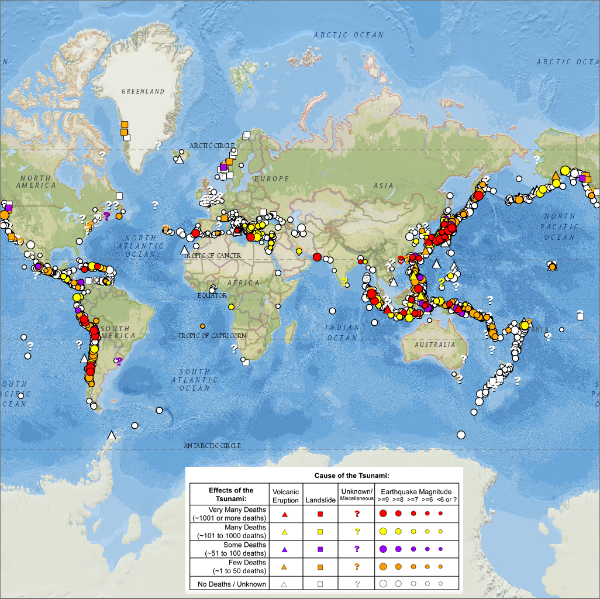
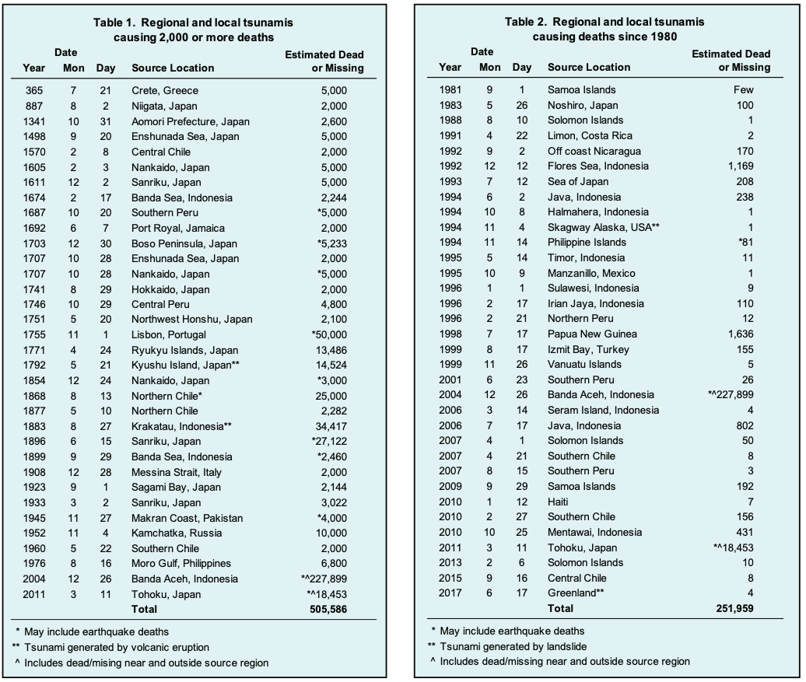
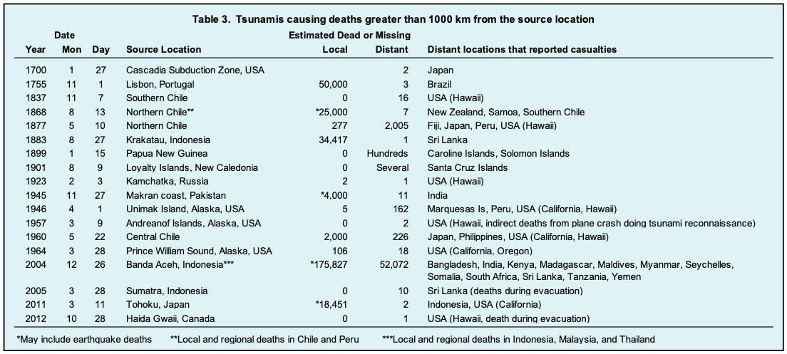

Tsunami events
The major areas of the world that experience intense activity with the potential for a tsunami are along the boundaries of the Pacific ocean with other regions. However, tsunamis can be generated in any coastal area, including inland seas and large lakes. Fig. 3.1.2, sourced from NOAA, maps some of the tsunami-prone regions in the world.
{kind=link}

Fig. 3.1.2 Tsunami map across the world and color-coded to the destructiveness of the earthquake and tsunami (Source: NOAA, Natural Hazards Viewer)
There are good records of the recent tsunamis. However, these are primarily based on the accounts of personal observations of those in the past centuries. Fig. 3.1.3 shows the tsunami events caused due to earthquakes/volcanic eruptions/landslides/other causes between 1610 B.C. to 2017 A.D. The events are classified by the National Oceanic and Atmospheric Administration (NOAA) and based on the magnitude and cause.

Fig. 3.1.3 Map of tsunami events between 1610 B.C. to 2017 A.D. and color-coded to the magnitude and cause of the event (Source: NOAA report on tsunami events)
The tabular data shown in Fig. 3.1.4, compiled by NOAA’s National Centers for Environmental Information (NCEI) under the UNESCO/IOC-NOAA partnership, provides a glossary of tsunami events over the last 2000 years. Tsunamis with a travel time of 1-3 hours are classified as regional tsunamis, and major ones in the previous 2000 years are shown in Fig. 3.1.4.
{kind=link}

Fig. 3.1.4 List of tsunami events over the last 2000 years. The table also classifies the number of deaths and source of the tsunami (Source: NOAA report on tsunamis)
The destruction caused by a tsunami can range to much larger extents. The tsunamis that cause damage in regions beyond three hours of travel are classified as distant/teletsunami. Some of these from the last 300 years are shown in Fig. 3.1.5
{kind=link}

Fig. 3.1.5 List of teletsunami events over the last 300 years. The table also shows the source and distant locations where damage was caused (Source: NOAA report)